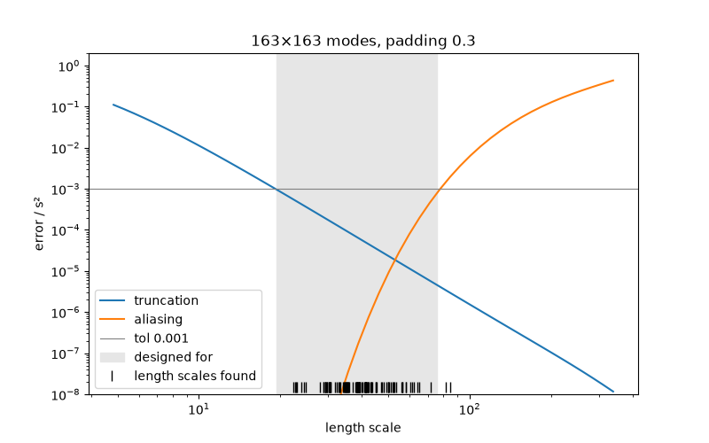

Geometry and discretisation¶
A FourierGP represents a field by Fourier modes on a box. This page explains
how that box relates to your data, how accurate the field is, and how
spectracles chooses the number of modes for you. To build fields in the first
place, see Building models.
import jax
import jax.numpy as jnp
from jax import random
from spectracles import Domain, FourierGP, Matern32, Parameter, SpatialDataGeneric
from spectracles.priors import LogNormal
jax.config.update("jax_enable_x64", True)
Units¶
spectracles doesn't know about arcseconds or parsecs. Positions can be in any units, and a field's length scale is in the same units. For LVM data, positions in arcseconds from the centre of the field are a good choice: length-scale priors are then in arcseconds too.
A Domain is the square region your data cover, in those units:
xy = random.uniform(random.PRNGKey(0), (2, 500), minval=-600.0, maxval=600.0)
spaxels = SpatialDataGeneric(x=xy[0], y=xy[1], idx=jnp.arange(500))
domain = Domain.from_points(spaxels.x, spaxels.y)
print(domain)
Domain(centre=(x, y), extent=side) sets it directly. Several fields can share
one domain.
Two kinds of error¶
The field lives on a periodic box: the domain plus a margin of padding on each side. Its covariance then differs from the kernel's in two ways:
- Truncation. The modes stop at a highest frequency, so structure finer than the spacing of the mode grid is missing. This matters for short length scales, and more modes fix it.
- Aliasing. The box wraps around, so each point is also correlated with copies of the others one box-width away. This matters for long length scales, and more padding fixes it.
Both are measured relative to the field's variance. The truncation error is an average over pairs of points spread across the domain; the aliasing error is the worst pair, since it couples opposite edges of the data.
Modes chosen for you¶
Given a domain, a FourierGP chooses its own padding and modes, so that both
errors are below a tolerance (0.1% by default) for every length scale between
its prior's 1% and 99% quantiles:
kernel = Matern32(
length_scale=Parameter(prior=LogNormal(40.0, 12.0)),
variance=Parameter(prior=LogNormal(1.0, 0.5)),
)
field = FourierGP(kernel, domain=domain)
print(field.n_modes, field.padding)
print(field.design) # (tol, shortest, longest length scale) it was chosen for
The padding is set by the longest length scale: keeping aliasing below 0.1% needs a gap of about ten length scales between the data and their periodic copies. The modes are set by the shortest. A wide prior costs both. You can change what the choice is made for:
FourierGP(kernel, domain=domain, tol=1e-2) # 1% instead of 0.1%
FourierGP(kernel, domain=domain, length_scale=(20.0, 100.0)) # your own range
FourierGP(kernel, domain=domain, quantiles=(0.05, 0.95)) # a narrower part of the prior
or set the modes and padding yourself:
Choosing takes a few seconds per field, once, when the model is built.
What error would I get?¶
discretisation_error gives both errors for a field as it is, or as it would
be with a different length scale, number of modes or padding:
from spectracles.discretisation import discretisation_error
print(discretisation_error(by_hand))
print(discretisation_error(by_hand, length_scale=15.0).truncation) # if ℓ were 15″
print(discretisation_error(by_hand, n_modes=51).truncation) # with fewer modes
print(discretisation_error(by_hand, padding=0.05).aliasing) # with less padding
It works for a kernel before you build any field, too:
An array of length scales gives the errors along it, e.g. for a plot:
import numpy as np
curve = discretisation_error(by_hand, length_scale=np.geomspace(5.0, 300.0, 30))
curve.truncation, curve.aliasing # arrays, one value per length scale
required_modes and required_padding answer the opposite question: what does
a given accuracy need?
from spectracles.discretisation import required_modes, required_padding
required_modes(kernel, domain, length_scale=20.0, padding=0.2, tol=1e-3) # modes per side
required_padding(kernel, domain, length_scale=80.0, tol=1e-3) # fraction of the extent
Checking a fit¶
The length scales a fit finds can fall outside the range a field was built for.
report checks every field in a model at each sample, at the shortest length
scale found (for truncation) and the longest (for aliasing):
import equinox as eqx
from spectracles import build_model
from spectracles.discretisation import report
from spectracles.inference import LatentSpace
class Map(eqx.Module):
flux: FourierGP
def __call__(self, data):
return self.flux(data)
latent = LatentSpace(build_model(Map, flux=field))
samples = latent.sample_prior_latent(random.PRNGKey(1), n=100) # stand-in for posterior samples
rows = report(latent, samples)
It prints a table with one row per field, and warns if any is above its
tolerance. Here it does: 100 draws from the prior reach beyond its 1%–99%
range, which the field was built for. After a real fit, a warning means the
posterior found length scales the field can't represent accurately; rebuild it
for the range found (length_scale=(shortest, longest)). It also takes a Posterior, or a model on its own to check its
current values. plot_discretisation shows one field's errors against the
length scale, with the length scales found as ticks:
import matplotlib.pyplot as plt
from spectracles.discretisation import plot_discretisation
found = latent.to_params(samples)["flux.kernel.length_scale"]
fig, ax = plt.subplots(figsize=(8, 5))
plot_discretisation(field, length_scales=found, ax=ax)
fig.savefig("discretisation.png")

The shaded range is what the field was built for. Truncation (left) is under the tolerance at its short end, and aliasing (right) at its long end.
Rules of thumb¶
With Δ the spacing of the mode grid (the box side divided by the number of modes) and the gap the distance between the data's far edge and its periodic copy (twice the padding times the extent), the errors depend only on ℓ/Δ and gap/ℓ:
| Kernel | 1%: ℓ_min/Δ | 1%: gap/ℓ_max | 0.1%: ℓ_min/Δ | 0.1%: gap/ℓ_max |
|---|---|---|---|---|
Matern12 |
≥ 3.0 | ≥ 5 | ≥ 9.6 | ≥ 7 |
Matern32 |
≥ 0.88 | ≥ 7 | ≥ 1.64 | ≥ 10 |
Matern52 |
≥ 0.58 | ≥ 8 | ≥ 0.90 | ≥ 11 |
SquaredExponential |
≥ 0.92 | ≥ 3 | ≥ 1.13 | ≥ 4 |
Length scales here are spectracles' own: a Matérn kernel's is the textbook one divided by √(2ν).
Without a domain¶
A FourierGP without a domain works as in earlier versions: positions must
already lie in [−π, π], the length scale is in those units, there is no
padding, and n_modes must be given. The diagnostic still works on it.
Kernels of your own¶
Choosing modes, and the diagnostic, need the kernel's continuous form: its
spectral density and covariance (Kernel.spectral_density and
Kernel.covariance). The built-in kernels have both. For a kernel without
them, give n_modes and padding yourself.